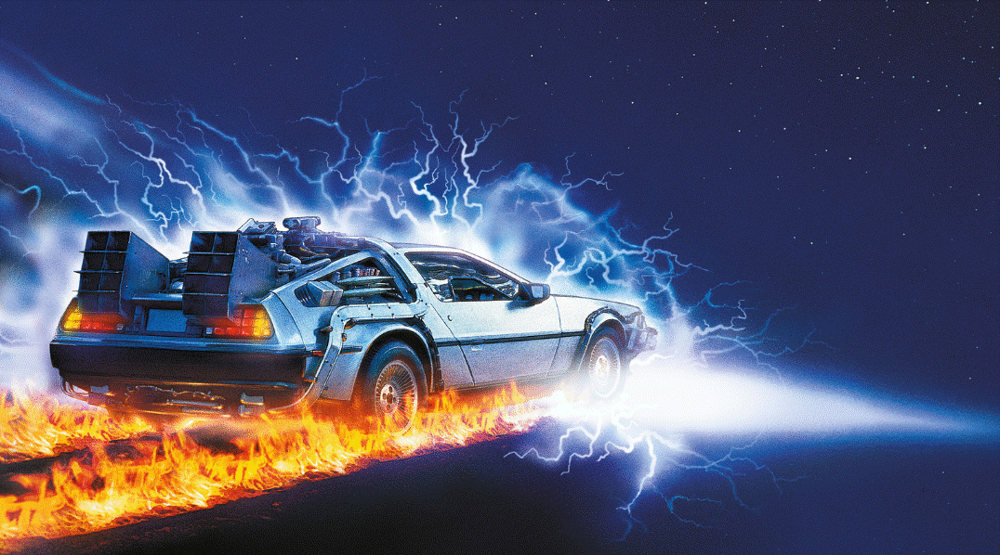
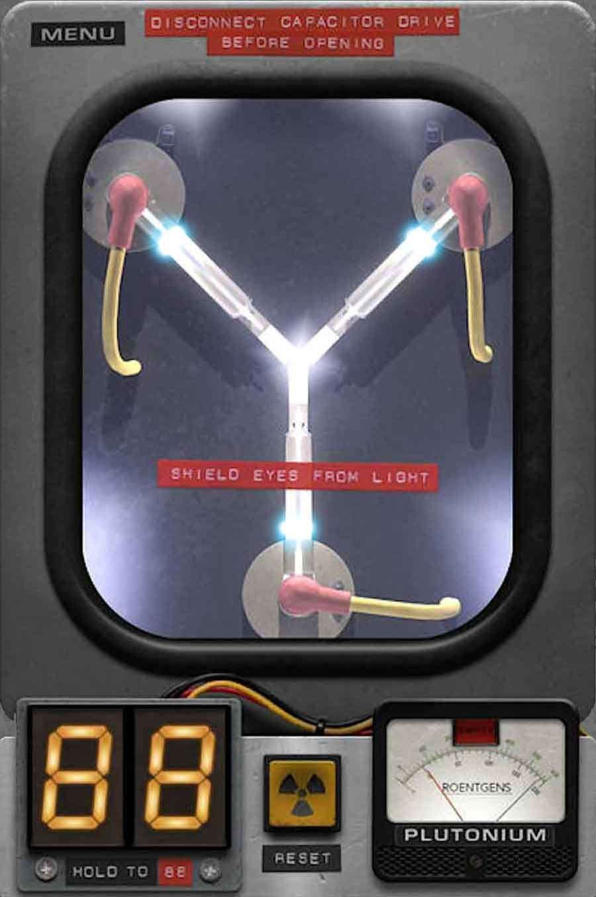

Universal Pictures Presents...
Back to the Future III
A Robert Zemeskis Film
They've saved the
Best Trip for last...
But this time they may
have gone too far.
Starring
- MICHAEL J. FOX
- CHRISTOPHER LLOYD
- MARY STEENBURGEN


Will the Flux Capacitor Make it Through the Ultimate Test of Time?
More Info
Credits
Directed by Robert Zemeckis. Produced by Bob Gale and Neil Canton. Music by Alan Silvestri Michael J. Fox, Christopher Lloyd, Mary Steenburgen, Lea Thompson. Edited By Arthur Schmidt and Henry Keramidas Director of Photography: Dean Cundey, A.S.C. Executive Producer Steven Spielberg Produced by: Bob Gale Written by Robert Zemeskis & Bob Gale, Directed by Robert Zemeskis. UNIVERSAL. AMBLIN ENTERTAINMENT